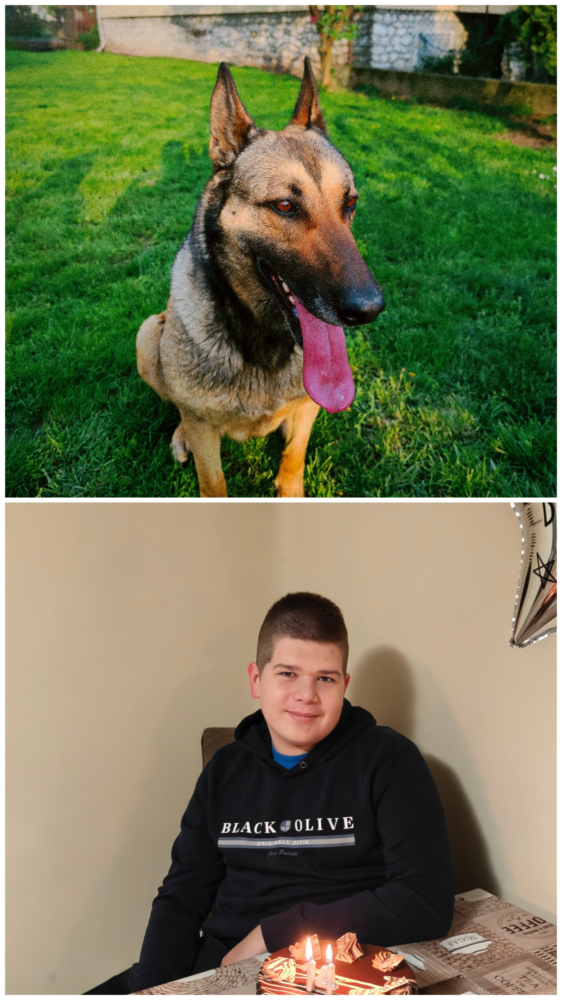

Mályiabn lakok, 14 éves vagyok. Régen fociztam de most már inkább röplabdázni szeretek. Volt egy kutyám akit nagyon szerettem csak sajnos rosszol lett és el kellett altatni.
Azért az iformatika mert érdekelnek az ilyen dolgok és azért a kandót választottam mert tudtam hogy ide fog járni egy barátom és érdekelt hogy milyen lesz.
